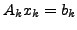
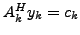

Science and engineering problems frequently require solving a sequence of dual linear systems,  and . Two examples are the Iterative Rational Krylov Algorithm for model reduction and Quantum Monte Carlo methods in electronic structure calculations. This talk introduces Recycling BiCG, a BiCG method that recycles two Krylov subspaces from one pair of linear systems to the next pair. The recycle spaces are approximate left and right invariant subspaces corresponding to the eigenvalues close to the origin. The recycle spaces are found by solving a small generalized eigenvalue problem alongside the dual linear systems being solved in the sequence.
We develop a generalized bi-Lanczos algorithm, where the two matrices of the bi-Lanczos procedure are not each other's conjugate transpose, but satisfy this relation over the generated Krylov subspaces. This is sufficient for a short term recurrence. Next, we derive an augmented bi-Lanczos algorithm with recycling and show that this algorithm is a special case of the generalized bi-Lanczos algorithm. The Petrov-Galerkin approximation that includes recycling of the Krylov subspaces leads to modified two-term recurrences for the solution and residual updates.
We test our algorithm in three application areas. First, we solve a discretized partial differential equation of convection-diffusion type, because these are well-known model problems. Second, we use Recycling BiCG for the linear systems arising in the Iterative Rational Krylov Algorithm for model reduction, which requires solving a sequence of slowly changing, dual linear systems. Third, we consider Quantum Monte Carlo (QMC) methods for electronic structure calculations. Although QMC methods could solve a single system at each step in the Monte Carlo sequence, solving dual systems reduces the number of iterations for the same accuracy. Our experiments with Recycling BiCG give promising results.